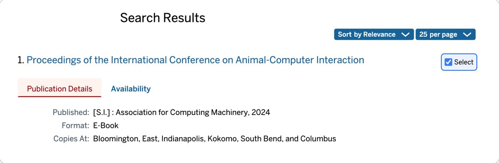
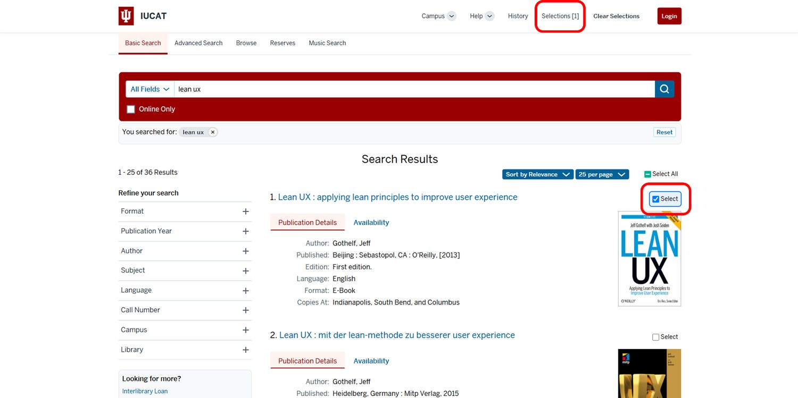
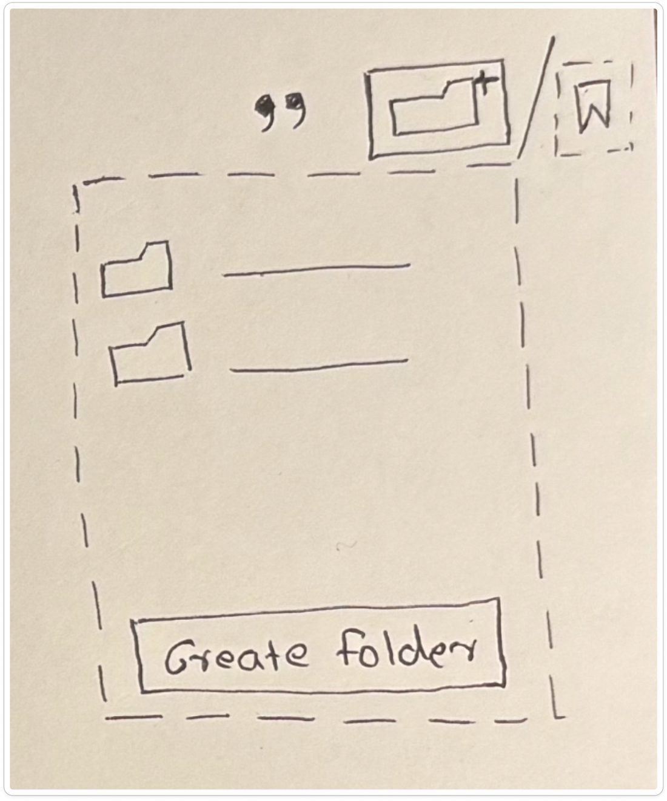
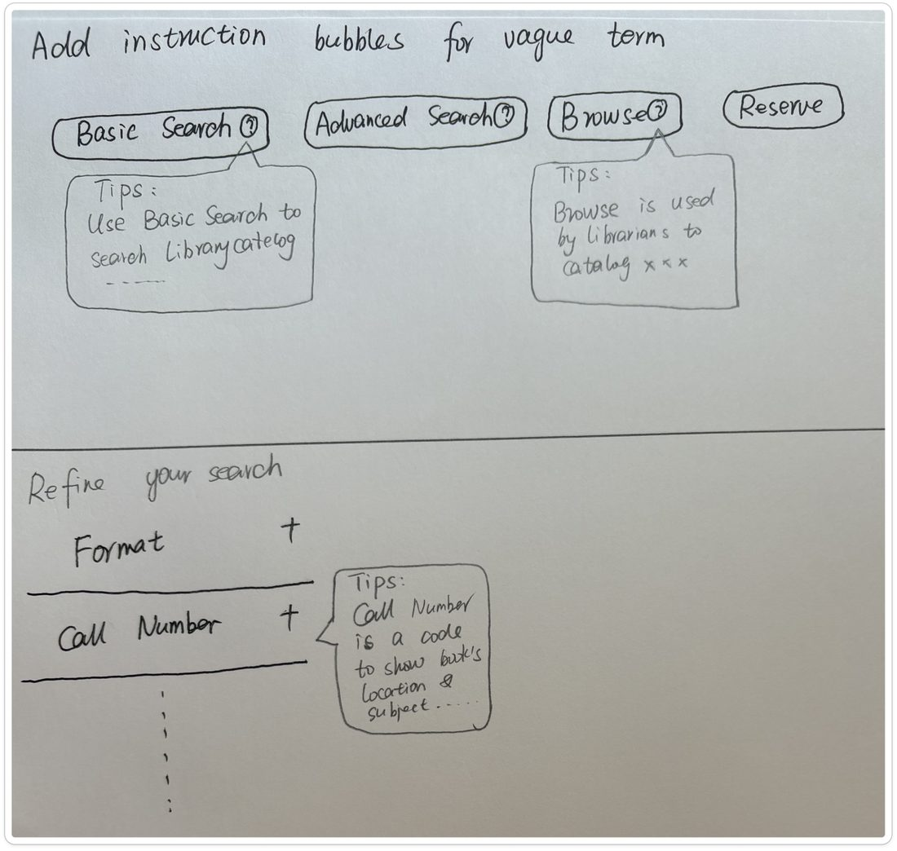
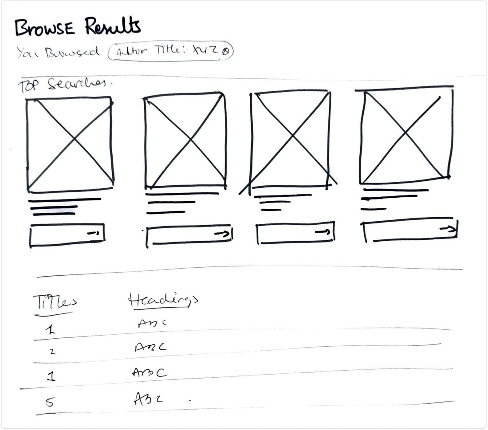
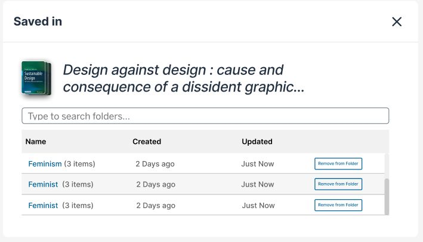
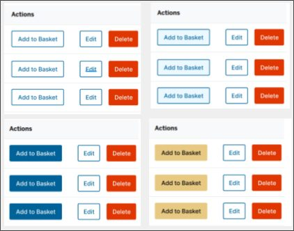
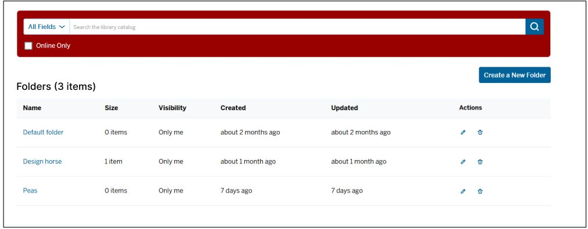

The library catalog had a save button. It was a checkbox called “Select”.
IUCAT is how Indiana University finds, saves and requests books. In a team of eight we redesigned saving and requesting. The Basket was my idea.
Nobody could find how to save a book
To save an item you tick a box labelled Select. It lands in a Selections tab, and only from there can you file it. Requesting is a different button on a different page.

The real thing: a screenshot of today's Select checkbox.
The two red circles are everything the system shows you after you save.How we got from that checkbox to the Basket
Five steps, in the order they happened.
Students saved a list of items while thinking aloud. We never said Selections or Folders. Before that we interviewed three IU librarians and compared catalogs on the same framework, including Stanford and Harvard.
Most people paused at the Select checkbox or missed it completely.
Like ticking emails before deleting them. People waited for a second step that never came.
Most could not find the Selections tab where their items had gone.
They ticked several books expecting to check them out together. Request is on each item's own page, one book at a time.
they answer the same questions again and again, mostly about what the catalog's words mean

Everyone drew alone first, then we put the sheets side by side. The aim was to imagine new features, not only tidy the old ones.
 bookmark, plus or pin
bookmark, plus or pin a folder picker, drawn over the real page
a folder picker, drawn over the real page
make a folder on the spot the whole save flow on one sheet
the whole save flow on one sheet numbering every action
numbering every action what a folder page needs
what a folder page needs
bubbles for the library’s jargon
browse results with coversOur early ideas put everything in one cart. The sketches showed why that fails: keeping a book for later and asking for it now are different intentions. So I proposed a Basket: collect while you search, check out once.
A named Save to Folder button on every search result.
Collect from search, see what is available where, request it all together.


IUCAT is built with Rivet, IU's design system, so every idea had to be rebuilt from its parts. Three places took the most rounds.


 The folder modal
The folder modalRivet's ready-made modal said nothing about the folders themselves. Ours shows what each holds, when it changed, and lets you create one in place.




Button colourWe tried green, blue and gold for Add to Basket. The rule we kept: blue and white for actions, red only for destructive ones.

 The Basket preview
The Basket previewAn early version opened a full page. We changed it to a panel that slides over search, so adding a book never costs you your place.
They asked whether items should move from Basket back into Folders. We kept the two apart on purpose, so Basket is only ever about requesting.
Restricted items need a reading-room appointment on another site. We added a notice saying where you are sent and why.
What we handed over
Every screen here is rebuilt in code from the final design.
Where it stands
Notes for developers: building the slide-in Basket from Rivet's dialog, keyboard behaviour, and two ways to store a Basket.
This was a design handoff. Nothing is measured yet, and I would rather say that than invent a number.
“Pradyumna has an extraordinary ability to see the system behind the screen. He doesn’t just solve the brief, he reframes the problem in ways that unlock better outcomes for everyone involved.”
Name the job before you design the button.
Most of the confusion was not about layout. It was one word standing in for two intentions.
before this:a platform for 2,000+ volunteers.